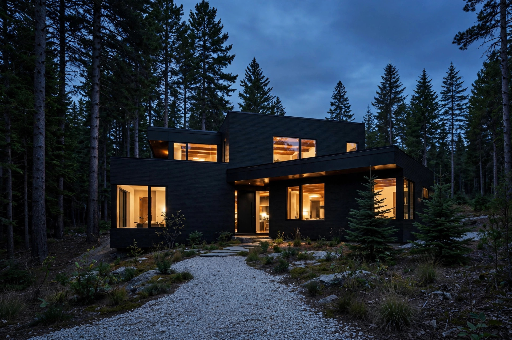

Your AI Designer Rendered a Black House. Its Walls Run 54°F Hotter Than the White House Next Door.

Picture it at dusk, because that is when the render always shows it. A black box of a house settles into a stand of trees, and the walls seem to dissolve. Edges soften. The building stops being an object and becomes a shadow with lit windows, quiet and certain of itself. Who would not want to live inside that image? Type twelve words into a design app and it hands you the picture in seconds, photorealistic down to the gravel. What the app never hands you is the second image: the same house at 3 p.m. in August, its walls running more than fifty degrees hotter than the air, drinking sunlight the way the render drank your attention.
Color is architecture's cheapest material and its most consequential. Same price per gallon, wildly different physics: one of them turns your walls into a solar collector, and the design tools that made choosing it effortless have nothing to say about that. They were built to optimize for the eye, trained on millions of images of beautiful houses, and not one of those training images came with a utility bill attached. The eye is the one organ that never pays it.
The trend is real, and it is accelerating
Houzz's 2026 renovation data puts numbers on the mood: 8 percent of renovating homeowners now choose black for their exterior walls, a share holding steady or growing, while black has become the single most popular trim color in America at 39 percent, up seventeen points since 2024. White trim, the default for a century, has collapsed to 19 percent. Walk any new subdivision in the Sun Belt and you will see the translation, repeated lot after lot with the confidence of a formula: charcoal siding, black window frames, dark metal roofs, the whole composition tuned for contrast the way a photograph gets tuned, for the camera and for nobody who has to live with the afternoon sun. It photographs beautifully. Siding manufacturers have noticed too. This August, Ideal Siding issued an unusual public warning urging homeowners to consider heat performance before going dark, noting that dark vinyl in intense sun can shrink, warp, fade, or, in their words, melt after a single summer (PRNewswire, August 2026; Apartment Therapy, September 2026).
So the look is everywhere, the physics is unforgiving, and nobody in the transaction is required to connect the two. Nobody.
What the wall actually does all afternoon
Researchers measuring New York City rooftops with infrared radiometers found black surfaces running up to 54°F hotter than white ones, and simply painting a black roof white cut peak temperatures by 43°F (NASA Earth Observatory). Walls are a subtler case than roofs, catching less direct sun, but they are also far less insulated than the roof assembly above them, which means more of the heat they absorb migrates indoors. Physics does not negotiate. Berkeley Lab ran the definitive numbers: over 100,000 whole-building energy simulations across sixteen California climate zones, testing what happens when walls reflect sunlight instead of swallowing it. In single-family homes, reflective "cool" walls cut annual HVAC energy costs by 4 to 27 percent, in many climates matching or beating the savings from a cool roof (Rosado and Levinson, Energy & Buildings).
Read that study backwards and it becomes a price list for the trend. Berkeley Lab's baseline was an average wall reflecting 25 percent of sunlight; its cool walls reflected 40 to 60 percent or more. A black exterior, the Tricorn Black and charcoal tones dominating the renders, reflects roughly 5 percent. That is a twenty-point swing in the wrong direction, larger than the average-to-cool jump that produced up to 27 percent savings. If the relationship holds even approximately in reverse, and the physics gives no reason to expect mercy, a black-walled house in a warm climate plausibly pays a single-digit to mid-teens percentage penalty on its cooling costs versus the same house in an ordinary color. Against a genuinely reflective wall, the gap is the full Berkeley Lab range plus the dark penalty stacked on top. I am showing this math because nobody else will. It is an estimate, not a measurement, and I will say plainly below what it cannot prove, because an honest number with visible scaffolding beats a precise one with none.
The code polices your roof and ignores your walls
Here is the regulatory detail that makes the whole situation possible. California's Title 24 energy code prescribes minimum solar reflectance for roofs in exacting detail: a low-slope roof needs three-year aged reflectance of at least 0.63, steep-slope residential roofs in the hotter climate zones at least 0.20, every product certified and labeled (BayREN Title 24 guide). For walls, the code requires nothing. Zero. A black south-facing wall in Fresno sails through plan review without a single comment, because no reviewer has a box to check. The state spent two decades perfecting the science of reflective roofs, proved the same physics applies to walls, published the hundred-thousand-simulation study, and then regulated exactly half the building envelope.
This is the gap the design apps slide through. A generative visualizer can render you a black house in Joshua Tree, and no layer of the system, not the app, not the code, not the plan checker, is obligated to mention that you have just specified a solar collector in the desert. Optimization, it turns out, was never the problem. Nobody optimized anything. Everyone just looked at the picture, and the picture never sweats.
In fairness to the black house
Dismissing the trend as Instagram folly would be lazy, and wrong. North of roughly the Mason-Dixon line, in heating-dominated climates, a dark wall is not a liability but a small asset: winter sun absorbed by dark cladding genuinely trims heating load, which is exactly why Berkeley Lab's cool walls show a heating penalty in cool weather. Dark colors hide grime, soften the weathering that streaks light stucco, and carry real design intent, which is why architects keep reaching for them even when the energy model winces. A black volume receding into redwoods is not an accident of fashion; it is one of the oldest moves in modernism, a building choosing to be quiet, choosing to let the landscape do the talking while the architecture holds its breath, which is a legitimate and even beautiful idea as long as somebody has done the thermal arithmetic first. The honest claim is narrower than the trend's critics want and more useful than its fans admit. In cooling-dominated climates, the look has a thermal price. Quote it or pay it unknowingly, but do not pretend the render told you.
What this analysis cannot prove
Boundaries, stated plainly. The dark-wall penalty above is extrapolated from Berkeley Lab's measured cool-wall savings, not from a study that isolated black versus average walls; no such study appears to exist. The 4-to-27 percent range spans building vintages and climate zones, and a new Title 24 home with well-insulated walls sits at the insensitive end. Houzz's color data skews toward affluent, design-engaged renovators, not the national housing stock. Ideal Siding sells siding, so treat its warping warning as directional, though it is consistent with vinyl's known heat-distortion threshold near 160°F, a temperature sunlit dark cladding can reach. And I did not audit individual design apps product by product; the claim is structural, that generative visualizers as a category optimize for aesthetics and carry no energy annotation, which is observable in how the tools present themselves.
Before you pick the color
For anyone building, re-siding, or repainting in a warm climate, the defenses are simple and cheap. Read the LRV number printed on every paint chip, the Light Reflectance Value from 0 (black) to 100 (white), and keep walls above roughly 40 unless you have consciously budgeted the cooling cost. Match the material to the color: fiber cement, stucco, and charred timber tolerate dark tones far better than vinyl, which is the one that warps. Ask your paint store for solar-reflective exterior coatings and quote Berkeley Lab's 40-percent reflectance threshold; the products exist, they just have no marketing. And if you love the look but not the physics, do what 39 percent of renovators are doing: put the black on the trim. Trim is a sliver of the wall area, the thermal penalty rounds to nothing, and the contrast reads exactly as dramatic from the street. The render never had to choose between beauty and physics. You do. Choose with both eyes open.